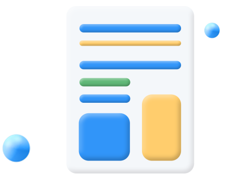
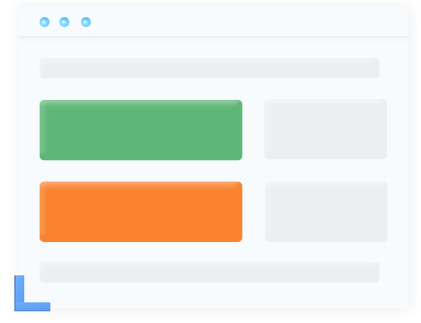
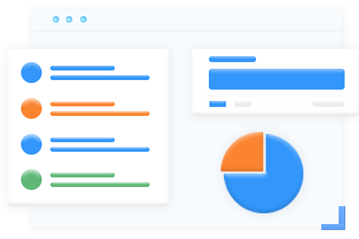

解决企业需求痛点

流程繁杂、工作流程没标准
新入职员工是否进入状态很慢，各部门协同是否拖拖拉拉，
找了很多业务系统，劳民伤财还不适用？
信息爆炸、数据收集成本高
一到月底，面对各种统计报表，只能加班应对。一通比对连自己
都怀疑数据的真实性。数据的收集是否还从每张A4纸中得来？
信息不互通、协作凌乱低效
企业内部信息不互通，跨部门协作涉及流程步骤、流转人员多，
出现信息短联、工作重复等现象，需人工时刻督促，喂，我的事
情做好啦，到你做啦。
管理艰难、工作数据无依托
是否遇到问题无法及时响应和解决，难以管理、跟踪、分析工作
过程出现的问题，月底工作成果无数据依托，考核难？
实现企业管控痒点
定制业务流程设定执行标准
企业可以根据自身业务，定制完全符合自己的表单
业务流程，自定义统计看板，打造专属业务系统。
数据自动收集报表自动统计
在业务工单流转过程中自动收集数据，系统自动生成各类统计报表，
动动手指得出工作数据，为员工绩效考核标准提供最有力的证据。

工单自动流转实现信息互通
依托企业微信、钉钉做信息通信，何时何地，轻松工作，消息及时
提醒，工作及时处理，工作效率翻倍提升！
实时监管权责分明
每个业务流程数据透明，时间清晰，工作数据，工
作时效，工作权责一目了然，完全杜绝扯皮推诿。
